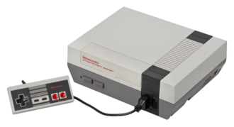
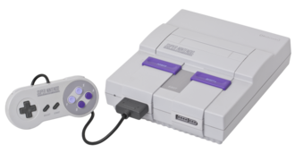
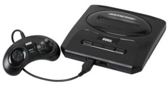
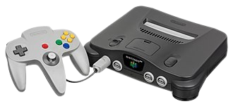
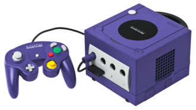
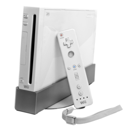

Contenido
Historia del Retrogaming
Los videojuegos retro comenzaron a ganar popularidad durante las décadas de 1980 y 1990, cuando consolas como el Nintendo Entertainment System (NES), Sega Genesis y Super Nintendo dominaron la industria. Estos sistemas introdujeron franquicias icónicas y ayudaron a establecer las bases de los videojuegos modernos.
Con el paso del tiempo, muchos jugadores comenzaron a conservar y coleccionar estas consolas y videojuegos clásicos debido a su valor histórico y nostálgico. Este interés dio origen al movimiento conocido como retrogaming.
Consolas mas importantes
Cada una de estas consolas marcó una generación diferente de jugadores y aportó innovaciones importantes a la industria de los videojuegos:
| Nombre de Consola |
Imagen |
| Nintendo Entertainment System (NES) |

|
| Super Nintendo Entertainment System (SNES) |

|
| Sega Genesis |

|
| Nintendo 64 |

|
| Nintendo GameCube |

|
| Playstation 1 |

|
| Nintendo Wii |

|
Juegos iconicos
Muchos videojuegos retro continúan siendo reconocidos como algunas de las mejores experiencias de la historia. Juegos como Super Mario Bros., The Legend of Zelda, Metroid, Sonic the Hedgehog y Final Fantasy revolucionaron la manera en que las personas experimentaban los videojuegos.
Incluso hoy en día, muchas compañías continúan relanzando estos títulos en consolas modernas debido a su popularidad y legado cultural.
ver Galeria
Coleccionismo moderno
El coleccionismo retro se ha convertido en una actividad muy popular entre fanáticos de los videojuegos. Algunas personas coleccionan consolas originales, mientras que otras buscan juegos raros o ediciones limitadas.
El valor de ciertos videojuegos ha aumentado significativamente con el tiempo, especialmente si se encuentran completos y en buenas condiciones.
Emulacion y preservacion
La emulación permite ejecutar videojuegos clásicos en computadoras y dispositivos modernos mediante programas especiales conocidos como emuladores. Esto ayuda a preservar videojuegos antiguos que ya no se producen oficialmente.
Gracias a la preservación digital, nuevas generaciones pueden seguir disfrutando títulos clásicos y aprender sobre la historia de los videojuegos.